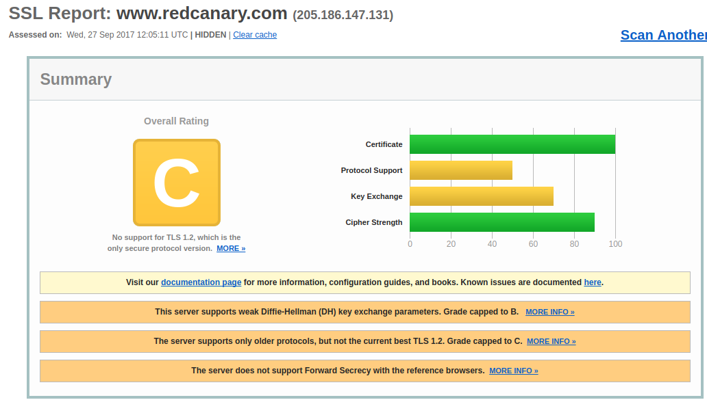
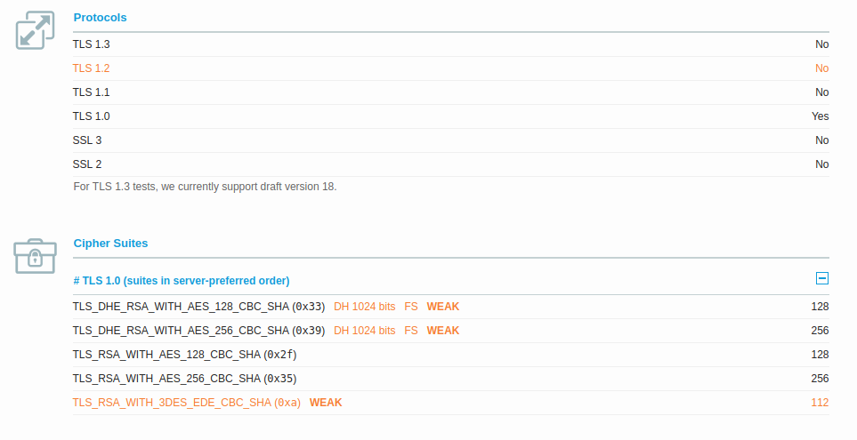

Red Canary, an endpoint Security Company, uses weak protocol and cipher combinations on their website. As a Security company, you would think that they would be on the ball and offer up the best of the breed when it comes to the security of their website. Especially when it is the endpoint that will be connecting to their website and this is exactly what they are trying to protect.
I noticed this lack of security when reading an article this morning (HELPNETSECURITY) and it mentioned Carbon black and Red Canary as good starting points to protecting your endpoints. I had never heard of Red Canary so I went to their website to learn a little more. However, being the security guy that I am, I limit the protocols and ciphers that my browser will connect with. The following is what I saw when attempting to see their site in Chrome.
I was curious why I couldn't connect and wanted to see what protocols and ciphers they were using. So I headed over to one of my favorite sites, www.ssllabs.com, and tested their server. They receive an overall grade of a 'C'. For some reason, they only accept TLS 1.0 and a few weak ciphers.
 When building a web server it normally comes with too many protocols and ciphers enabled. This leads me to think that they chose to limit what was served up to these weak ones. Why? Sometimes businesses will keep the weak ciphers enabled in order to have compatibility with customers on older platforms while still providing the stronger protocols and ciphers. However, this doesn't seem to be the case with Red Canary.
They say that first impressions are everything and mine isn't too good.
Contact AgileSecOps if you need help with the setup of your website security.
Send us an email.This is sad. Especially since healthcare data is worth more on the black market than credit cards.
Read the entire article as it is a little interesting.
Let me tell you about my experience with HIPAA that happened just yesterday. If anyone knows me, then they know that I was medically discharged from the military due to a back injury. Yesterday, I was in a lot of pain and could barely get out of bed. Since it takes roughly 30 days to get an appointment with a primary care doctor in the VA system, I opted to go to the Dallas VA Hospital Emergency Room.
Reminder: The main goal of HIPAA is the protection of patient healthcare data.With only knowing my last name and the last 4 digits of my social security number it allowed me to get the following treatment.
- Initial triage.
- Seen by a physician
- Full blood panel and results
- Two shots (pain reliever and steroids)
- Four x-rays
I asked questions about what they were doing and why. I obtained information as to the other medication I was on. They were more than willing to answer any question I had.
All of this was done without seeing any form of identification from me to prove who I was.
Other issues:
- Patient room doors not kept closed and doctors/nurses talking could be heard clearly regarding other patients.
- Patients treated in the hallway (in the back of the ER) and I could hear everything.
- There was a nurse station in the ER waiting area and I asked what I was still waiting for...she told me, and anyone else listening, all of my test results and what I was still waiting for.
During this entire process, I could have been anyone. All I needed was the last name of a veteran and the last four digits of their social security number. This information could be obtained by a hacker (through a system breach) or anyone listening in the waiting room.
The only time I was asked for an ID was at the pharmacy to pick up three medications (two of which I could have gotten over the counter).
HIPAA is a very easy regulation to become compliant with on paper. However, if there are no inspections or onsite reviews of what's really going on then it's all just another checkbox. We need more than this. We need teeth in the regulation to force providers to have these random inspections.
In my opinion, these should be more than random inspections, they should be more like a vulnerability scan. Send someone to a facility for treatment and see what they observe and what they can find out. Then follow up with the inspection of the remaining HIPAA check boxes.

Last month I put the word out that I would perform free IT and IT Security services for non-profits. I didn't get as many companies as I thought I would have. I did notice that there were many retweets from the startup community. Since they thought it was such a good idea, I'll make the same offer to them.
I can only handle a few, however, for the month of September I will offer free IT and IT Security services for startups. I'll handle this on a first come first serve basis.
Email AgileSecOps and let me know what you need. I'll help as many as I can but I'm sorry if I have to turn you down.